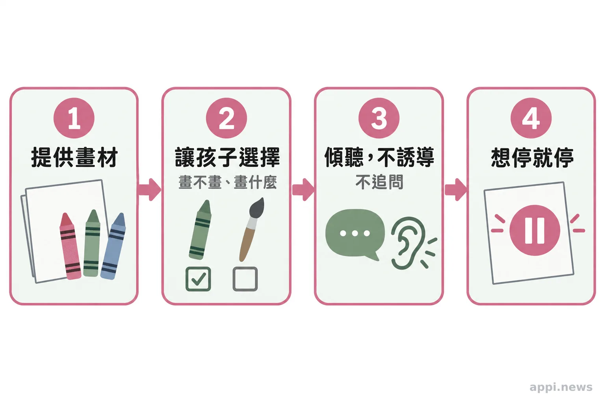
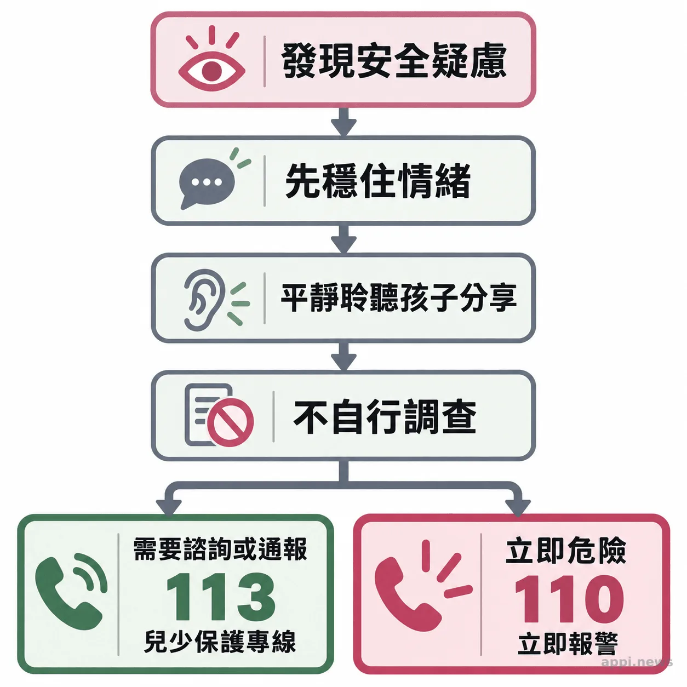

兒童繪畫不能判定受虐：陪伴受創孩子，大人先守住三個界線
畫畫能為受創兒少提供表達與互動的入口，但不能當作受虐證據。了解大人如何陪伴、何時交由專業評估，以及在台灣可使用的求助管道。
孩子難以說明心情時，畫紙和畫筆有時能成為互動起點，卻不能讓孩子自動說出經歷，也無法從畫面讀出受虐真相。陪伴的重點，是保留孩子的選擇，也知道何時交由專業人員。
一、孩子沉默時，先提供安全與選擇
孩子可能受到年齡、語言發展、害怕或安全感影響，暫時說不清楚感受；大人可以先提供穩定陪伴，不把沉默當作受虐證據，也不急著追問原因。
年幼孩子仍在學習辨認感受、排列事件先後和理解因果。美國國家兒童創傷壓力網指出，幼兒可能難以用語言表達害怕或無助，創傷反應也因年齡、發展和照顧環境而異，不能單獨用來判斷孩子經歷了什麼。美國國家兒童創傷壓力網：幼兒創傷的影響
大人可說清楚日常安排，讓孩子知道接下來去哪裡、誰會在場，也讓他選擇休息或拿畫紙。可靠、關懷且能保護孩子的照顧者持續在場，是美國國家兒童創傷壓力網列出的重要保護因子。陪伴不必立刻換來談話；可預期的回應讓孩子知道求助時有人願意聽。
二、畫畫可以打開互動，但不保證療效
創作可能提供一種非語言的互動方式，讓孩子選擇材料、主題和節奏；是否有助於情緒或創傷症狀，則取決於孩子狀況與介入方式，不能只靠畫畫保證改善。
孩子可能先挑顏色或和大人一起創作，再決定是否多說。只畫、不談也可以。大人可描述看得到的事，例如「你選了這幾種顏色」，再等孩子回應，不替他下結論。
Morison 等人 2022 年的系統性回顧與統合分析，納入兒童及青少年創意藝術介入研究。統合結果顯示，介入後的創傷後壓力症狀量表分數低於介入前；和控制組相比也較低，分別來自 15 項研究與 7 項研究。作者同時指出，研究品質、介入方式和創傷經驗有差異，因此結論仍屬初步，不能據此推論所有孩子只要畫畫都會改善。研究摘要
Braito 等人回顧兒童心理健康服務中的藝術心理治療研究，共整理 17 篇研究，其中不少是個案報告、小型研究，隨機對照試驗少，也缺乏重複驗證。這些結果提醒家長與陪伴者：日常創作可以是關係和表達的入口；若要處理創傷症狀或設定治療目標，應由受訓專業人員評估與規劃。研究摘要
美國國家兒童創傷壓力網指出，重要保護因子包括 “the reliable presence of a positive, caring, and protective parent or caregiver”，也就是可靠且能保護孩子的照顧者持續在場。資料來源
三、陪畫時不誘導、不解碼，也尊重停止
讓孩子決定要不要畫、畫什麼、要不要分享和何時停止；不誘導回答、不猜測圖像意義，也不把陪畫稱作專業治療。
開始前可以只問：「你想畫畫嗎？」孩子拒絕，就換一種活動或留些空間。孩子願意畫時，可把紙和畫材放在他容易拿取的位置，讓他自行選擇。若他主動說起畫面，大人先聽完，再簡單回應「謝謝你告訴我」，不用追問細節或要求重述。
避免問「這是不是某某人打你？」或「你為什麼把這個人畫得這麼大？」這類帶方向的問題，也不要把作品拿給多人輪流解讀。陪伴者可以留意孩子說了什麼、當時是否有安全疑慮；若有需要，將客觀觀察交給社工、心理或醫療專業人員。專業評估不由一張圖決定，也不應由一般志工代替。
協會官網記錄，林秀霞理事長於 2026 年 8 月主辦油畫展，並安排聚焦受虐兒與脆弱家庭支持的專題論壇。這類公開活動讓藝術與兒少議題有交流的空間；日常陪伴仍須尊重孩子的節奏，也要分清陪伴者與治療者的角色。協會活動紀錄

四、畫作不能證明受虐，有疑慮要接上保護資源
不能。顏色、人物大小、身體部位或畫面內容都無法單獨證明或排除受虐；若另有安全疑慮，應交由兒少保護與相關專業人員評估。
Allen 與 Tussey 2012 年檢視以受控研究判斷兒童是否曾受性虐待或身體虐待的圖像指標。研究指出，既有圖像線索很少被重複驗證，且常有方法限制；沒有任何圖像指標或評分系統具備足夠實證，可用來辨識孩子是否受虐。研究摘要 同一種畫法可能來自年齡、想像、生活接觸或當天心情，不能由成人替孩子配上一個固定解釋。
公開兒少保護資訊時，也要顧及孩子的隱私。兒童及少年福利與權益保障法第 69 條規定，對遭受特定不當對待的兒少，不得報導或記載姓名及其他足以識別身分的資訊；任何人也不得以媒體、資訊或其他公示方式揭露相關識別資訊。分享畫作、照片或故事前，應先確認不會讓孩子被辨認。全國法規資料庫：兒少權法第 69 條
若孩子直接透露受傷害，先保持平靜，聽他願意說的部分，不盤問、不自行查案，也不要承諾替他保密。可以告訴孩子：「謝謝你告訴我，我會找能保護你的人幫忙。」一般民眾與志工的責任是關心、保護眼前安全並連結資源，後續由主管機關和專業人員處理。
在台灣，113 保護專線全年 24 小時受理兒少保護等事件的通報與求助諮詢；若孩子面臨立即人身危險，先撥 110。拿不準是否要通報，可向 113 詢問。衛生福利部：113 保護專線

- 畫畫可成為互動入口，不能保證改善創傷症狀。
- 孩子決定是否創作與分享；大人不從畫作猜測受虐經歷。
- 有安全疑慮時不盤問、不查案，聯繫 113；立即危險先打 110。
家長、教師與志工今天可以檢查一件事：孩子能否拒絕、停下來而不被追問。畫紙只是選項；專業介入與保護決策由合適的專業人員及主管機關承接。
常見問題
畫畫可以是互動方式，但不能保證療效或用來判定受虐；孩子不想分享時，大人應尊重他的選擇。
常見問題
Q1：孩子畫出黑色或暴力內容，代表受虐嗎？
不代表。單一圖像沒有足夠依據判定受虐；若另有具體安全疑慮，請交由專業人員評估。
Q2：孩子不願意解釋畫作，大人要再問一次嗎？
不用追問。尊重孩子不分享的選擇，可以陪在旁邊或改做其他活動。
Q3：一般志工可以替孩子做藝術治療嗎？
不能把一般陪畫稱為藝術治療。志工可提供材料與陪伴；治療目標和介入方式應由受訓專業人員評估規劃。
Q4：孩子透露受傷害時，第一步是什麼？
先保持平靜，聽孩子願意說的內容，不自行調查或盤問，並聯繫兒少保護資源。
Q5：在台灣可以撥哪支電話求助？
可撥 113 進行兒少保護諮詢或通報；有立即人身危險時，先撥 110。
參考文獻
- Morison L, Simonds L, Stewart SJF. (2022). Effectiveness of creative arts-based interventions for treating children and adolescents exposed to traumatic events: a systematic review of the quantitative evidence and meta-analysis. Arts & Health, 14(3), 237–262. https://pubmed.ncbi.nlm.nih.gov/34969356/
- Braito I, Rudd T, Buyuktaskin D, Ahmed M, Glancy C, Mulligan A. (2022). Review: systematic review of effectiveness of art psychotherapy in children with mental health disorders. Irish Journal of Medical Science, 191(3), 1369–1383. https://pubmed.ncbi.nlm.nih.gov/34231158/
- Allen B, Tussey C. (2012). Can projective drawings detect if a child experienced sexual or physical abuse? A systematic review of the controlled research. Trauma, Violence, & Abuse, 13(2), 97–111. https://pubmed.ncbi.nlm.nih.gov/22467642/
- National Child Traumatic Stress Network. Early Childhood Trauma: Effects. https://www.nctsn.org/what-is-child-trauma/trauma-types/early-childhood-trauma/effects
- 衛生福利部保護服務司。113 保護專線介紹. https://dep.mohw.gov.tw/dops/cp-1183-6499-105.html
- 全國法規資料庫。兒童及少年福利與權益保障法第 69 條. https://law.moj.gov.tw/LawClass/LawSingle.aspx?pcode=D0050001&flno=69
- 台灣微光希望關懷協會。「浮生藝憶・微光傳愛」林秀霞油畫個展. https://www.ghca0101.org/news-2026-08-exhibition.html
本文同步刊於 appi.news。